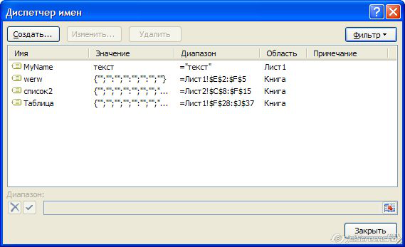
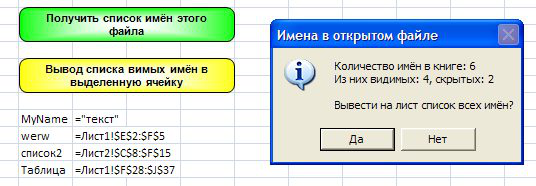
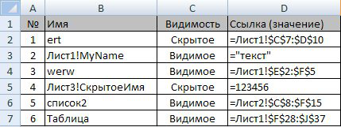

Если вы хотите посмотреть, присутствуют ли в книге Excel назначенные имена,
сделать это просто - достаточно вызвать диспетчер имён нажатием комбинации клавиш Ctrl + F3:

В диспетчере имён можно создать новые имена, просмотреть ранее созданные, и, при желании, изменить их.
Одно но: в диспетчере имён отображаются только видимые имена,
а в книге Excel могут присутствовать и скрытые.
Чтобы узнать количество имён в книге, а также посмотреть их значения,
мы воспользуемся макросом:
Sub ПолучениеСпискаИмёнВКниге()
Dim n As Name, VisibleNames%, HiddenNames%, WB As Workbook, i As Long
Set WB = ActiveWorkbook
For Each n In WB.Names
VisibleNames = VisibleNames - n.Visible
HiddenNames = HiddenNames - Not n.Visible
Next n
If VisibleNames + HiddenNames = 0 Then
MsgBox "Имена в книге отсутствуют (не назначены)", vbInformation
Else
msg = "Количество имён в книге: " & VisibleNames + HiddenNames & vbNewLine & _
"Из них видимых: " & VisibleNames & ", скрытых: " & HiddenNames & vbNewLine & _
vbNewLine & "Вывести на лист список всех имён?"
If MsgBox(msg, vbInformation + vbYesNo, "Имена в открытом файле") = vbYes Then
Dim sh As Worksheet: Set sh = Workbooks.Add(xlWBATWorksheet).Worksheets(1)
sh.Cells(1, 1).Resize(, 4).Value = _
Array("№", "Имя", "Видимость", "Ссылка (значение)")
sh.Cells(1, 1).Resize(, 4).Interior.ColorIndex = 15
For i = 1 To WB.Names.Count
Set n = WB.Names(i)
sh.Cells(i + 1, 1).Resize(, 4).Value = _
Array(i, n.Name, IIf(n.Visible, "Видимое", "Скрытое"), "'" & n.RefersTo)
Next i
sh.UsedRange.EntireColumn.AutoFit
End If
End If
End Sub
Для этого в прикреплённом файле нажмём зеленую кнопку,
и увидим вообщение с информацией о количестве имен в книге:

Если в диаоговом окне мы нажмём «Да», то макрос создаст новую книгу, и сформирует в ней таблицу со списком всех имен книги:

Ознакомьтесь также со способом сохранения значений в скрытых именах книги Excel
Если же вам требуется вывести список видимых имён на лист Excel, то можно воспользоваться макросом из одной строки:
Sub СписокВидимыхИмён()
ActiveCell.ListNames
End Sub
Того же эффекта можно добиться, нажав кнопку «Все имена» в диалоговом окне, вызываемом из меню Вставка - Имя - Вставить... (в Excel 2003):

|
Вложение |
Размер |
Загрузки |
Последняя загрузка |
|
41.5 КБ |
72 |
4 недели 8 часов назад |
- 19962 просмотра